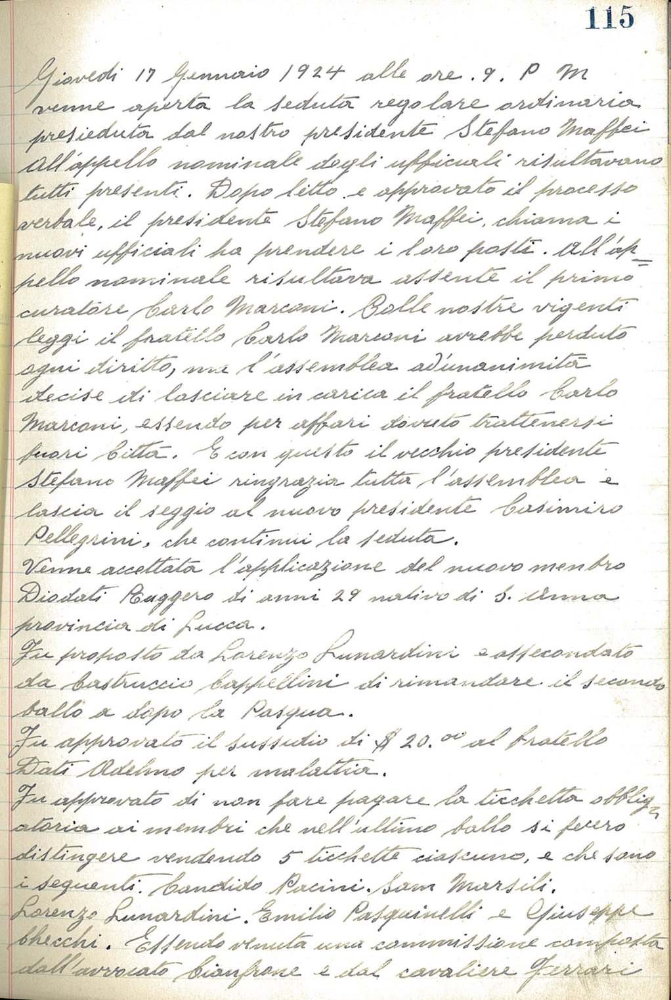Manuscript page number 115.
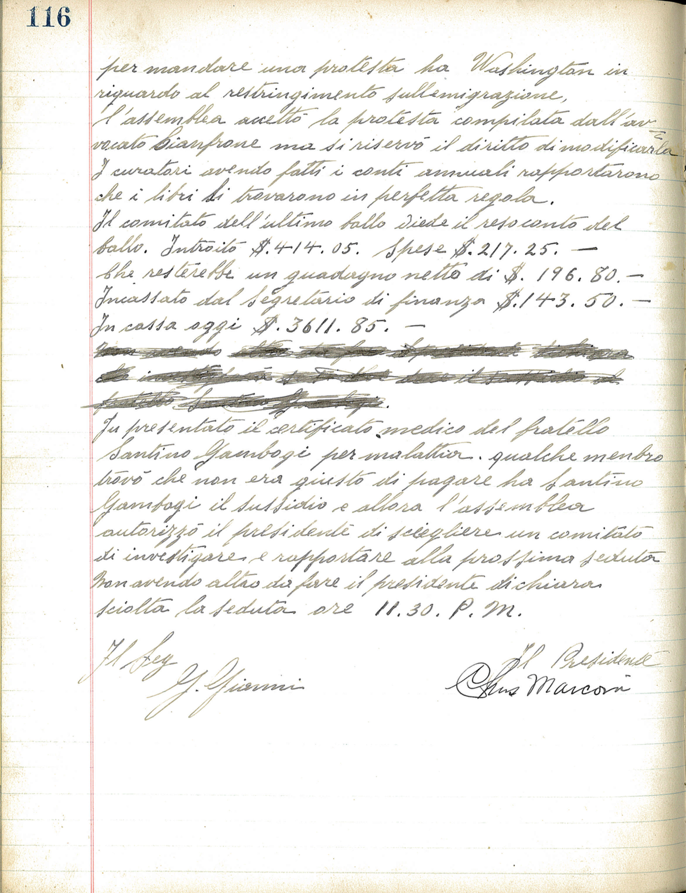Manuscript page number 116.
Giovedi 17 Gennaio 1924 alle ore .9. PM venne aperta la seduta
regolare ordinaria
presieduta dal nostro presidente
Stefano Maffei.
All’appello nominale degli ufficiali
risultavano
tutti presenti. Dopo letto e approvato il processo
verbale,
il presidente Stefano Maffei chiama i
nuovi ufficiali da prendere i loro posti.
All’ap-
pello nominale risultava assente
il primo
curatore Carlo
Marconi.
Colle nostre vigenti
leggi il fratello
Carlo Marconi avrebbe perduto
ogni diritto, ma l’assemblea
ad’unanimita’ decise di lasciare in carica il fratello
Carlo
Marconi, essendo per affari dovuto trattenersi
fuori
citta’. E con questo il vecchio presidente
Stefano
Maffei ringrazia tutta l’assemblea e
lascia il seggio al nuovo presidente Casimiro
Pellegrini, che
continui la seduta.
Venne accettata l’applicazione del nuovo membro
Diodati Ruggero
di anni 29 nativo di S. Anna
provincia di Lucca.
Fu proposto da Lorenzo Lunardini e assecondato
da Castruccio Cappellini di
rimandare il secondo
ballo a dopo la Pasqua.
Fu approvato il sussidio di $20.00
al fratello
Dati Adelmo
per malattia.
Fu approvato di non fare pagare la ticchetta
obbglig-
atoria ai membri che nell’ultimo ballo si fecero
distinguere
vendendo 5 ticchette ciascuno, e che sono
i seguenti. Candido Pacini. Sam
Marsili.
Lorenzo Lunardini. Emilio Pasquinelli e Giuseppe
Checci. Essendo venuta una commissione composta
dall’avvocato Cianfrone e dal cavaliere Ferrari
per mandare una protesta ha Washington in
riguardo al
restringimento sullemigrazione,
l’assemblea accetto la protesta compilata
dall’av-
vocato Cianfrone ma si riservo’ il diritto di modificarla
I
curatori avendo fatti i conti annuali rapportarono
che i libri si trovarono
in perfetta regola.
Il comitato dell’ultimo ballo diede il resoconto del
ballo. Introito $.414.05. Spese $.214.25. -
Che resterebbe un guadagno netto
di $.196.80. -
Incassato dal Segretario di finanza $.143.50. -
In cassa
oggi $.3611.85. -
Non avendo altro da fare il presidente dichiara
che
Fu presentato il certificato medico
del fratello
Santino Gambogi per
malattia. qualche membro
trovo’ che non era giusto di pagare ha Santino
Gambogi il sussidio e allora
l’assemblea
autorizzo’ il presidente di
sciegliere un comitato
di investigare e rapportare alla prossima seduta
Non avendo altro da fare il presidente
dichiara
sciolta la seduta ore 11.30. P.M.
Il Seg Il Presidente
G. Gianni
Carlo Marconi
 Manuscript page number 117.
Manuscript page number 117.
Giovedi 21 Febbraio alle ore 9. P.M.
venne aperta la seduta
regolare ordinaria
presieduta dal nostro primo
curatore Carlo
Marconi
All’appello nominale degli
ufficiali risultavano assenti i seguenti
ufficia-
li
Casimiro Pellegrini
presidente
Jacopo Sodini
vice
presidente
e Lorenzo Vigano’ ufficiale
sanitario
Fu proposto da Muzio Frediani
e assecondato da Adelmo Dati di dare un
banchetto al comitato ballo nel locale del
Pasquinelli. pero’ tutti
i membri che vogliano
appartenere possono pagando tutto l’ammonta-
re
che gli verra’ tassato. Fu proposto da
Modesto
Zini e
assecondato da Adelmo Dati
di passare
dollari $2.50 ai componenti il comitato ballo
l’astesso
che fu accordato al comitato precedente
Fu accordato il sussidio di $19.00 dollari
al fratello Virgilio Danesi
per malattia
Fu accordato il pagamento di $51.40 dollari
al fratello Muzio Frediani per stampa.
Mancando il presidente che aveva preso l’incarico
di investigare sulla
malattia di Santino
Gambogi l’assemblea
la mando’ alla prossima
seduta. Incassato $38.25. In cassa oggi.
$3907.90. Non avendo altro da fare il nostro
primo curatore dichiara sciolta la seduta. 10.30
P.M.
Il Seg
Il Pres.
G. Gianni
C. Pellegrini
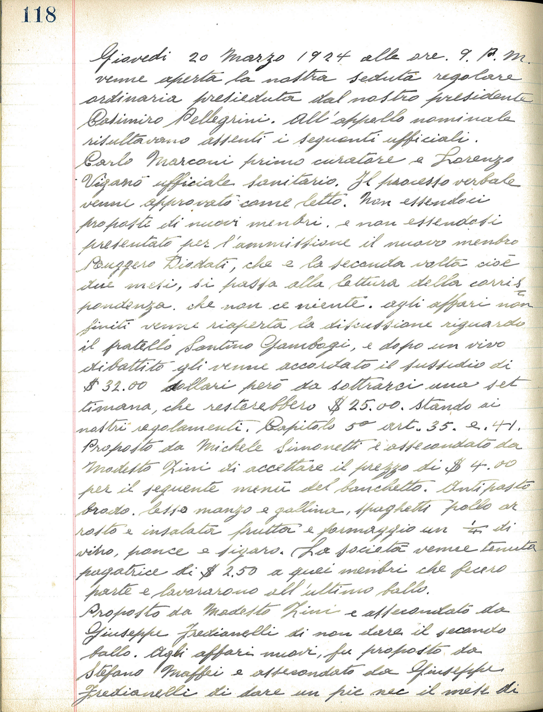Manuscript page number 118.
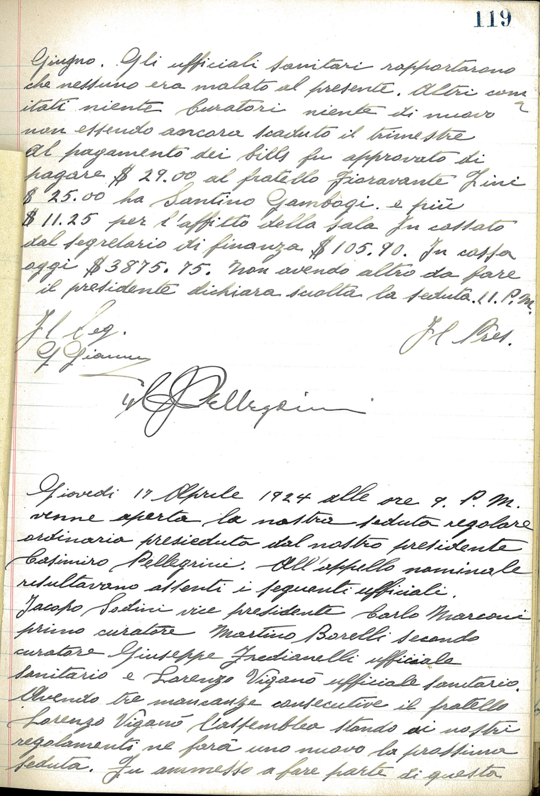Manuscript page number 119.
Giovedi 20 Marzo 1924 alle ore. 9. P.M.
venne aperta la nostra
seduta regolare
ordinaria presieduta dal nostro
presidente
Casimiro Pellegrini.
all’appello nominale
risultavano assenti i seguenti
ufficiali.
Carlo Marconi primo curatore
e Lorenzo
Vigano’ ufficiale
sanitario.
Il processo verbale
venne approvato come letto. Non essendoci
proposti di nuovi membri e non essendosi
presentato per l’ammissione
il nuovo membro
Ruggero Diodati, che
e la seconda volta cioe’ due mesi, si passa alla lettura dalla corris-
pondenza. che non ce niente. agli affari non
finiti venne riaperta la discussione riguardo
il fratello Santino
Giambogi, e dopo un vivo
dibattito gli venne accordato il
sussidio di
$32.00 dollari pero’ da sottrarci una set
timana, che
resterebbero $25.00. Stando ai
nostri regolamenti. Capitolo 50 art. 35. e. 41.
Proposto da Michele Simonetti e assecondata da
Modesto Zini di accettare il
prezzo di $4.00
per il seguente menu’ del banchetto. antipasto
brodo
lesso manzo e gallina, spaghetti pollo ar
rosto e insalata frutta e
formaggio un 1/4 di
vino, ponce e sigaro. La societa’ venne
tenuta
pagatrice di $2.50 a quei membri che fecero
parte e lavorarono
all’ultimo ballo.
Proposto da Modesto Zini e assecondato da
Giuseppe Fredianelli
di non dare il secondo
ballo.
Agli affari nuovi, fu proposto da
Stefano Maffei e
assecondato da Giuseppe
Fredianelli di dare un pic nic il mese di
Giugno. Gli ufficiali sanitari rapportarano
che
nessuno era malato al presidente. Altri com-
itati niente Curatori niente di
nuovo
non essendo ancora scaduto il trimestre
Al pagamento dei bills fu approvato di
pagare
$29.00 al fratello Fioravanti Zini
$25.00 ha
Santino Gambogi. e piu’ $11.25 per
l’affitto della sala fu cassato
dal segretario di finanza $105.90. In
cassa
oggi $3875.75. Non avendo altro da fare
il presidente dichiara sciolta la seduta. 11.
P.M.
Il Seg Il Pres
G. Gianni
C. Pellegrini
Manuscript page number 119.
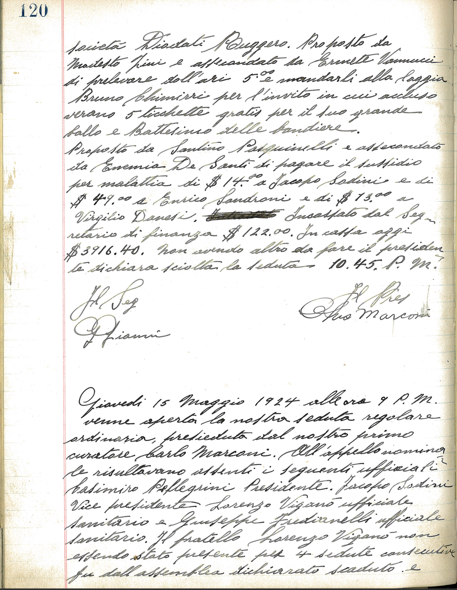Manuscript page number 120.
Giovedi 19 Aprile 1924 alle ore 9 P.M.
venne aperta la nostra
seduta regolare
ordinaria presieduta dal nostro
presidente
Casimiro Pellegrini.
All’appello nominale
risultavano assenti i seguenti
ufficiali.
Jacopo Sodini vice presidente
Carlo Marconi
primo
curatore
Martino Borelli secondo
curatore
Giuseppe Fredianelli
ufficiale
sanitario
e Lorenzo Vigano’ ufficiale
sanitario.
Avendo tre mancanze consecutive il
fratello
Lorenzo Vigano’ l’assemblea stando i nostri
regolamenti ne fara’ uno nuovo la prossima
seduta.
Fu ammesso a fare parte di questa
societa’
Diodati Ruggero.
Proposto da
Modesto Zini e assecondato da
Ermete Vannucci
di prelevare dollari 5.00 e mandarli alla loggia
Bruno Chimirri per
l’invito in cui accluso
verano 5 ticchette gratis per il suo grande
ballo e Battesimo delle bandiere.
Proposto da Santino Pasqunelli e assecondata
da
Enemia De Santi di
pagare il sussidio
per malattia di $14.00 a Jacopo Sodini e di
$49.00 a
Enrico Sandroni
e di $13.00 a
Virgilio
Danesi. Incassato dal Seg
retario di finanza
$122.00. In cassa oggi
$3916.40. Non avendo altro da fare il presiden-
te dichiara sciolta la seduta
10.45. P.M.
Il Seg Il Pres
G. Gianni
Carlo Marconi
Manuscript page number 120.
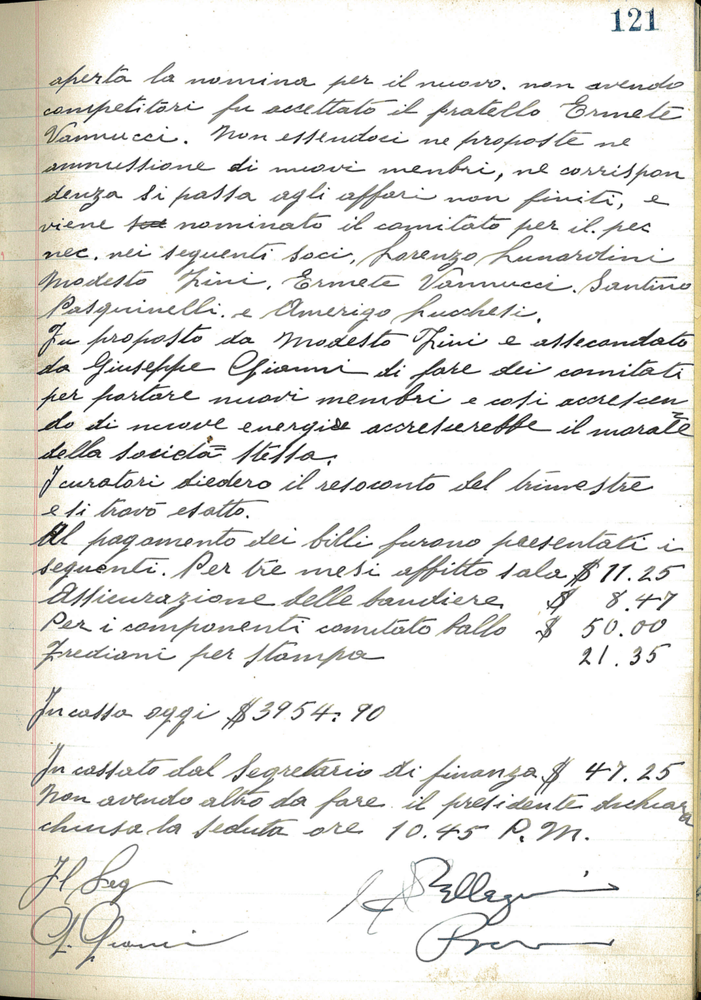Manuscript page number 121.
Giovedi 15 Maggio 1924 alle ore 9 P.M.
venne aperta la nostra
seduta regolare
ordinaria, presieduta dal nostro
primo
curatore Carlo Marconi.
all’appello nomina-
le risultavano assenti i seguenti
ufficiali
Casimiro Pellegrini
Presidente.
Jacopo Sodini
Vice
Presidente
Lorenzo Vigano’
ufficiale
Sanitario
e Giuseppe Fredianelli
ufficiale
Sanitario.
Il fratello Lorenzo Vigano’ non
essendo
stato presente per 4 seduta consecutive
fu dall’assemblea dichiarato scaduto e
aperta la nomina per il nuovo. non avendo
competitori fu
accettato il fratello Ermeti
Vannucci. Non essendoci ne proposte ne
ammissione di nuovi
membri, ne corrispon
denza si passa agli affari non finiti,
e
viene nominato il comitato per il pec
nec. nei seguenti
soci,
Lorenzo Lunardini
Modesto Zini,
Ermete Vannucci,
Santino
Pasquinelli
e Amerigo Lucchesi.
Fu proposto da Modesto Zini e assecondato
da Giuseppe Gianni di fare dei
comitati
per portare nuovi membri e cosi accrescec-
do di nuove
energie accrescerebbe il morale
della societa’ stessa.
I
curatori diedero il resoconto del trimestre
e si trovo’ esatto.
Al
pagamento dei billi furono presentati i
seguenti. Per tre mesi affitto sala
$11.25
Assicurazione delle bandiere $8.47
Per i componenti comitato
ballo $50.00
Frediani per stampa $21.35
In cassa
oggi $3954.90
In cassato dal Segretario di finanza $47.25
Non avendo altro da fare il presdiente
dichiara
chiusa la seduta ore 10.45 P.M.
Il Seg C.
Pellegrini
G. Gianni Pres
 Manuscript page number 122.
Manuscript page number 122.
Giovedi 19 Giugno 1924 alle ore 9. P.M.
venne aperta la nostra
seduta regolare
ordinaria presieduta dal nostro
presidente
Casimiro Pellegrini.
All’appello nominale
risultavano assenti i seguenti ufficiali
Jacopo Sodini vice presidente
e Giuseppe
Fredianelli
ufficiale Sanitario.
Fu ammesso ad’unanimita’ il nuovo membro
Aladino Frediani.
Fu proposto da Stefano
Maffei e assecondato da Carlo Marconi di
lasciare
il comitato gia’ scelto per il pic nec
e di darli pieno potere rigruardo
l’esito
della festa. Avendo il nostro
presidente avuto
il gentile pensiero di invitare l’intiera societa’
alle sue nozze. l’assemblea ad’unanimita’ decise di fargli un regalo, all’uopo
furano
incaricati i seguenti soci Castruccio
Cappellini
e Carlo Marconi
di comperarci un regalo
come meglio credevano, ma che non altropas-
sasse $50.00 dollari.
Incassato dal segretario di finanza $41.75
In
banca oggi 3911.08
Non avendo altro da fare il presidente
dichiara
sciolta la seduta ore. 10.30 P.M.
Il Seg Cas. Pellegrini
G. Gianni
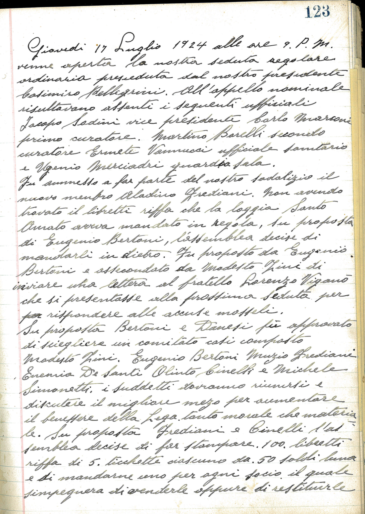Manuscript page number 123.
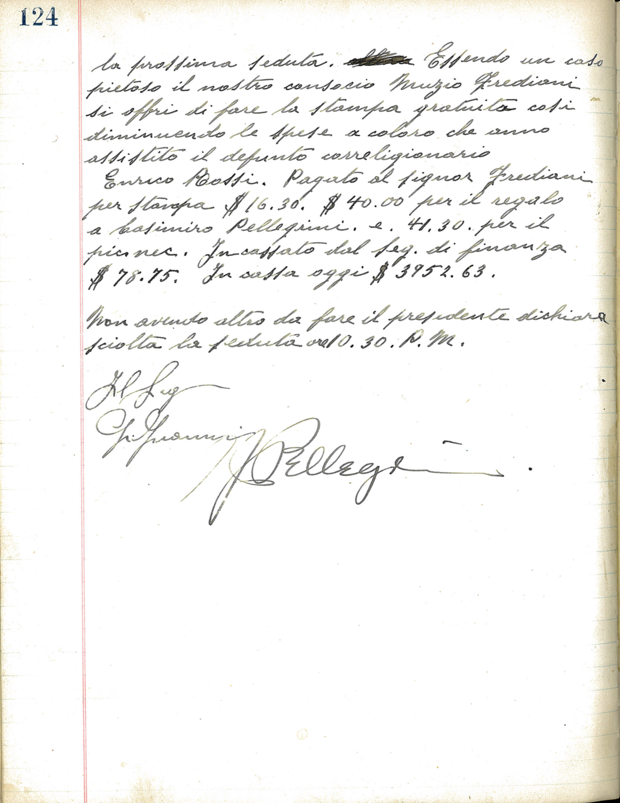Manuscript page number 124.
Giovedi 17 Luglio 1924 alle ore 9. P.M.
venne aperta la nostra
seduta regolare
ordinaria presieduta dal nostro
presidente
Casimiro Pellegrini.
All’appello nominale
risultavano assenti i seguenti ufficiali
Jacopo Sodini vice presidente
Carlo Marconi
primo
curatore.
Martino Barelli secondo
curatore
Ermete Vannucci ufficiale
sanitario
e Ugenio Merciadri guardia
Sala.
Fu ammesso a far parte del nostro Sodalizio il
nuovo membro
Aladino Frediani. Non avendo
trovato
il libretti riffa che la loggia Santo
Amato aveva mandato in regola, Su
proposta
di Eugenio Bertoni, l’assemblea
decise di
mandarli in dietro. Fu
proposto da Eugenio
Bertoni e assecondato da Modesto Zini di
inviare una lettera al fratello Lorenzo Vigano’ che si presentasse
alla prossima seduta per
per rispondere alle accuse mosseli.
Su proposta Bertoni e Danesi fu’ approvato
di sciegliere un comitato cosi composto
Modesto Zini.
Eugenio Bertoni
Muzio Frediani
Enemia De Santi
Olindo Cinelli
e Michele
Simonetti,
i sudetti dovranno riunirsi e
discutere il migliore mezo per
aumentare
il benessere della Lega.
tanto morale che materia-
le. Su
proposta Frediani e
Cinelli l’as
semblea decise di dar stampare. 100. libretti
riffa di 5. tichetti
ciascuno da. 50 soldi luna
e di mandarne uno per ogni socio. il
quale
simpeguera di vendere oppure di restituirle
la prossima seduta. Essendo un
caso
pietosi il nostro consocio Musio
Frediani
si offri di fare la stampa gratuita cosi
diminuendo le spese a coloro che anno
assistito il defunto correligionario
Enrico Rossi. Pagato al signor Frediani
per stampa $16.30. $40.00 per il
regalo
a Casimiro Pellegrini. e.
41.30. per il
pic.nic. Incassato dal Seg. di finanza
$78.75. I cassa
oggi 3952.63.
Non avendo altro da fare il presidente
dichiara
sciolta la seduta ore 10.30. P.M.
Il Seg
G. Gianni
C. Pellegrini
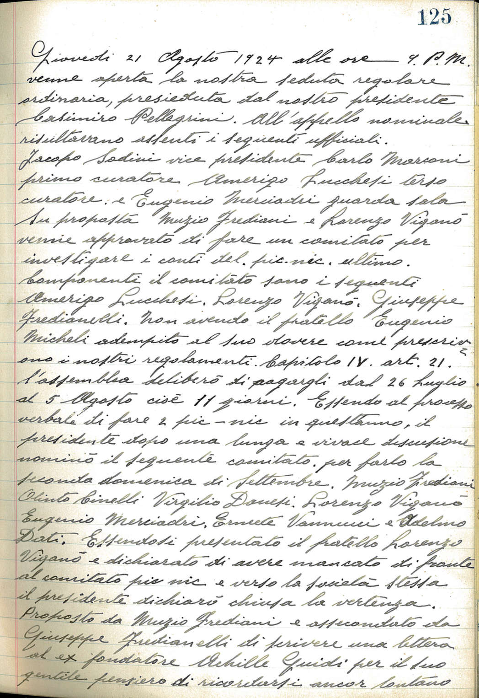Manuscript page number 125.
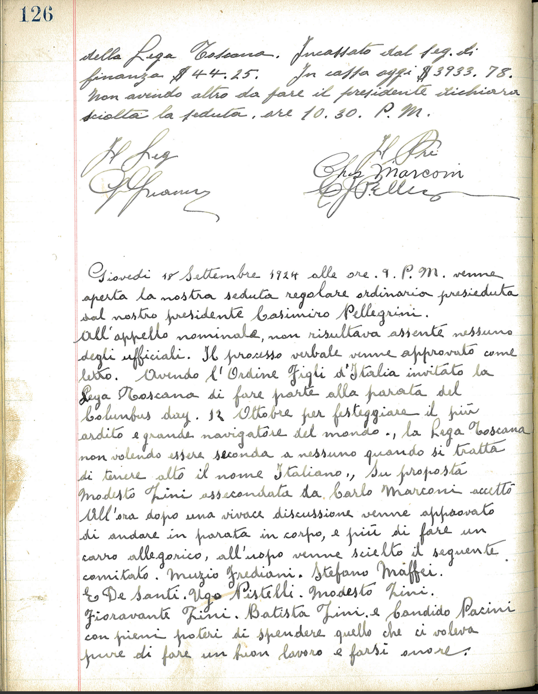Manuscript page number 126.
Giovedi 21 Agosto 1924 alle ore 9. P.M.
venne aperta la nostra
seduta regolare
ordinaria, presieduta dal nostro
presidente
Casimiro Pellegrini.
All’appello nominale
risultavano assenti i seguenti
ufficiali.
Jacopo Sodini vice presidente
Carlo Marconi
primo
curatore
Amerigo Lucchesi terso
curatore,
e Eugenio Merciadri guarda
sala
Su proposta Muzio Frediani e Lorenzo Vigano’ venne approvato di fare un
comitato per
investigare i conti del. pic.nic. ultimo.
Componenti
il comitato sonno i seguenti
Amerigo Lucchesi,
Lorenzo Vigano’,
Giuseppe
Fredianelli.
Non avendo il fratello Eugenio
Micheli adempito l suo dovere come prescriv-
ono i nostri
regolamenti. Capitolo IV. art. 21.
l’assemblea delibero’ di pagarli dal 26
Luglio
al 5 Agosto cioe’ 11 giorni.
Essendo al processo
verbale di fare 2 pic-nic in quest’anno, il
presidente dopo una lunga e vivace
discussione nomino’ il seguente comitato. per farlo la
seconda domenica
di Settembre.
Muzio Frediani
Olindo Cinelli
Virgilio Danesi.
Lorenzo Vigano’
Eugenio Merciadri,
Ermete Vannucci
e Adelmo
Dati.
Essendosi presentato il fratello Lorenzo
Vigano’ e dichiarato di avere mancato di fronte
al comitato pic
nic e verso la societa’ stessa
il presidente dichiaro’ chiusa la vertenza.
Proposta da Muzio Frediani e assecondato da
Giuseppe Fredianelli
di scrivere una lettera
ad ex fondatore Achille Guidi per il
suo
gentile pensiero di ricordarsi ancor lontano
della Lega Toscana. Incassto dal Seg. di
finanza
$44.25. In cassa oggi 3933.78.
Non avendo altro da fare il presidente
dichiara
sciolta la seduta. ore 10.30. P.M.
Il Seg Il Pres
G. Gianni
Chaz Marconi
C. Pellegrini
Manuscript page number 126.
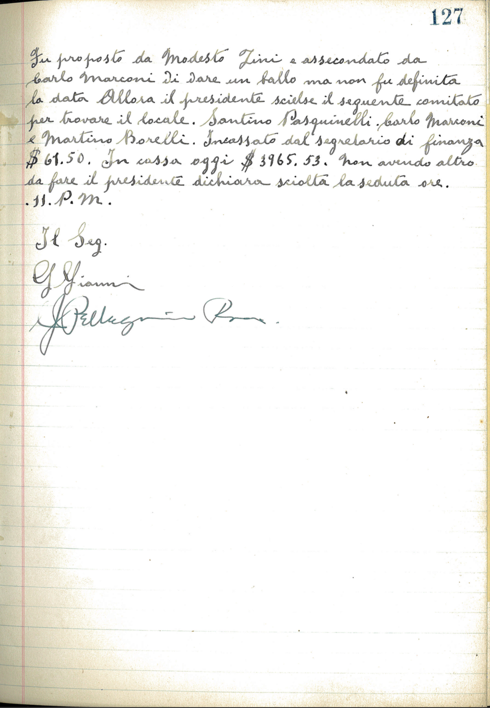Manuscript page number 127.
Giovedi 18 Settembre 1924 alle ore . 9 P.M venne
aperta la
nostra seduta regolare ordinaria presieduta
dal nostro presidente Casimiro
Pellegrini.
All’appello nominale, non risultava nessuno
degli
ufficiali. Il processo verbale venne approvato come
letto. Avendo l’Ordine
Figli d’Italia invitato la
Lega Toscana di fare parte alla parata del
Columbus day. 12 Ottobre per festeggiare il piu’ ardito’ e grande navigatore del
mondo., la Lega Toscana
non volendo essere seconda a nessuno quando si
tratta’ di tiene alto il nome Italiano., Su proposta
Modesto Zini assecondata
dal Carlo Marconi
accetto’ All’ora dopo una vivace discussione venne approvato
di andare in
parata in corpo, e piu’ di fare un
carro allegorico,
all’uopo venne scielto il seguente
comitato.
Muzio Frediani.
Stefano Maffei.
E De Santi.
Ugo Pistelli.
Modesti Zini.
Fioravante Zini.
Batista Zini.
e Candido Pacini
con pieni poteri di spendere quello che ci voleva
pure di fare un
buon lavoro e farsi onore.
Fu proposto da Modesto Zini e assecondato da
Carlo Marconi di dare un
ballo ma non fu definita
la data
Allora il presidente scielse il seguente
comitato
per trovare il locale.
Santino Pasquinelli.
Carlo Marconi
e Martino Borelli.
Incassato dal segretario di finanza
$61.50. In cassa oggi $3965.53.
non avendo alto
da fare il presidente dichira sciolta la seduta
ore.
.11. P.M.
Il Seg.
G Gianni
C. Pellegrini Pres.
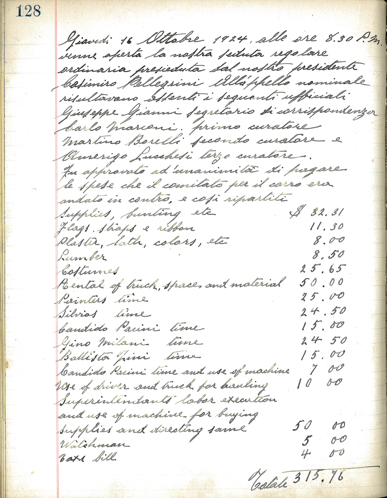Manuscript page number 128.
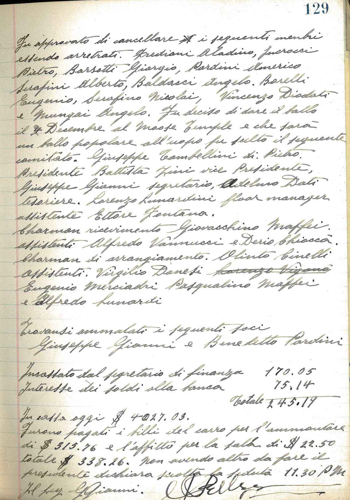Manuscript page number 129.
Giovedi 16 Ottobre 1924, alle ore 8.30 P.M.
venne aperta la
nostra seduta regolare
ordinaria presieduta dal
nostro presidente
Casimiro Pellegrini
All’appello nominale
risultavano assenti i seguenti ufficiali
Giuseppe Gianni Segretario di
corrispondenza
Carlo Marconi. primo curatore
Martino Borelli secondo
curatore
e
Amerigo Lucchesi terzo
curatore.
Fu approvato ad’unanimita’ di pagare
le spese che il comitato
per il carro era
andato in contro, e cosi ripartiti
Supplies, bunting
etc $32.31
Flags, straps, e ribbon 11.30
Plaster, lath, colors, etc
8.00
Lumber 8.50
Costumes 25.65
Rental of truck, space, and
material 50.00
Painters time 25.00
Silvios time 24.50
Candito Pacini time 15.00
Gino Milani time 24.50
Battista Zini time 15.00
Candito Pacini time and use of machine
7.00
Use of driver and truck for banling 10.00
Superintendents labor
execution
and use of machine for buying
supplies and directing same
50.00
Watchman 5.00
Tax bill 4.00
Totale 315.76
Fu approvato di cancellare i i seguenti
membri
essendo arretrati.
Frediani Aladino,
Incrocci
Pietro,
Barsotti Giorgio,
Pardini Americo
Serafini Alberto,
Baldacci Angelo,
Borelli
Eugenio,
Serafino Nicolai,
Vincenzo Diodati
e Mungai Angelo.
Fu deciso di dare il ballo
il 4 Decembre al Moose Temple e ce sara’
un ballo popolare all’uopo fu scelto il seguente
comitato.
Giuseppe Tambellini di Pietro
Presidente
Battista Zini
vice Presidente,
Giuseppe Gianni
segretario,
Adelmo Dati
tesoriere.
Lorenzo Lunardini
floor manager
assistente
Ettore Fontana.
Charman ricevimento
Giovacchino Maffei.
assistenti
Alfredo Vannucci
e Derio Chiocca’.
Charman di
arrangiamento
Olindo Cinelli
assistenti,
Virgilio Danesi
Lorenzo Vigano’
Eugenio Merciadri
Pasqualino Maffei
e Alfredo Lunardi
Trovansi ammalati i seguenti soci
Giuseppe Gianni e Benedetto Pardini
Incassato dal segretario di finanza
170.05
Interesse dei soldi alla banca 75.14
Totale 245.19
Incassa
oggi $4027.03.
Furono pagati i billi del carro per l’ammontare
di
$315.76 e l’affito per la sala’ di $22.50
totale $338.26. Non avendo
altro da fare il
presidente dichiara sciolt la
seduta 11.30 PM Il Seg G. Gianni. C
Pellegrini
Pres.
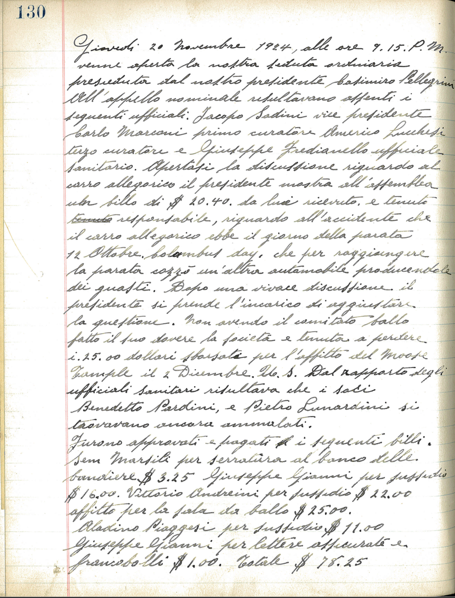Manuscript page number 130.
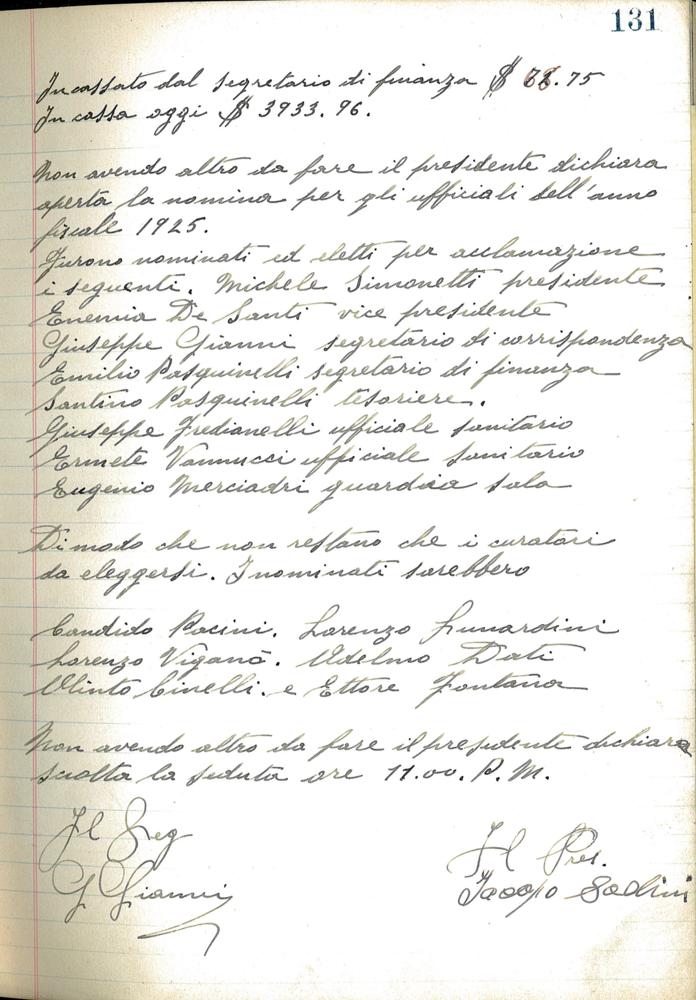Manuscript page number 131.
Giovedi 20 Novembre 1924, alle ore 9.15. P.M.
venne aperta la
nostra seduta ordinaria
presieduta dal nostro
presidente Casimiro Pellegrini
All’appello nominale risultavano assenti i
seguenti
ufficiali.
Jacopo Sodini vice presidente
Carlo Marconi primo curatore
Americo Lucchesi
terzo
curatore
e Giuseppe Fredianell
ufficiale
sanitario.
Apertasi la discussione riguardo al
carro allegorico il presidente mostra all’assemblea
un billo di
$20.40. da lui ricevuto, e tenuto
tenuto responsabile, riguardo all’accidente che
il
carro allegorico ebbe il giorno della parata
12 Ottobre, Columbus day, che
per raggiungire
la parata cozzo’ un’altra automobile producendole
dei
guasti. Dopo una vivace discussione il
presidente
si prende l’incarico di aggiustare
la questione. Non avendo il comitato
ballo
fatto il suo dovere la societa’ e tenuta a perdere
i .25.00
dollari sborsati per l’affito del Moose
Temple il 2 Dicembre .U.S. Dal
rapporto degli
ufficiali sanitari risultava che i soci
Benedetto Pardini, e Pietro Lunardini si
Trovavano ancora
ammalati.
Furono approvati e pagati i seguenti billi.
Sam Marsili per
serratura al banco delle
bandiere $3.25 Giuseppe Gianni per sussidio
$16.00.
Vittorio
Andreini per sussidio $22.00
affitto per la sala da ballo $25.00.
Aladino
Piaggesi per sussidio $11.00
Giuseppe Gianni perlettere assicurate e
francobolli $1.00. Totale $78.25
Incassato dal segretario di finanza
$7268.75
In cassa oggi $ 3933.96.
Non avendo
altro da fare il presidente dichiara
aperta la
nomina per gli ufficiali dell’anno
fiscale 1925.
Furono nominati ed elettti per acclamazione
i seguenti.
Michele Simonetti
presidente
Enemia De Santi
vice presidente
Giuseppe Gianni
segretario di
corrispondenza
Emilio Pasquinelli
segretario di
finanza
Santino Pasquinelli
tesoriere.
Giuseppe Fredianelli
ufficiale
sanitario
Ermete Vannucci
ufficiale
sanitario
Eugenio Merciadri
guardia sala
Di modo che non restano che i curatori
da eleggersi. I nominati sarebbero
Candido Pacini. Lorenzo Lunardini
Lorenzo Vigano’. Adelmo
Dati
Olinto Cinelli. e Ettore Fontana
Non avendo altro da fare il presidente
dichiara
sciolta la seduta ore 11.00. P.M.
Il Seg Il Pres.
G. Gianni
Jacopo Sodini
 Manuscript page number 132.
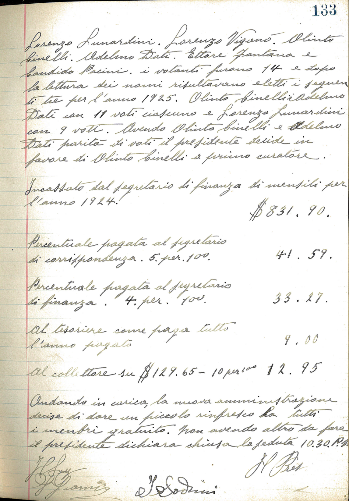Manuscript page number 133.
Manuscript page number 132.
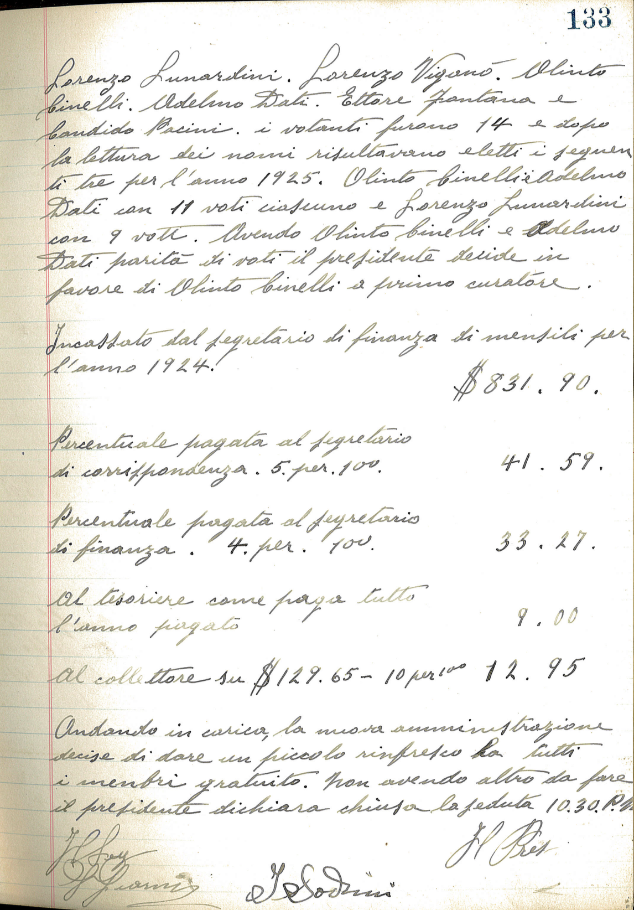Manuscript page number 133.
Giovedi 18 Dicembre 1924 alle ore 9.15. P.M.
venne aperta la
nostra seduta regolare ordinaria
presieduta dal
nostro vice presidente Jacopo Sodini.
All’appello nominale risultavano assenti i seguenti
ufficiali.
Casimiro Pellegrini
presidente
Carlo Marconi primo curatore
Martino Borelli
secondo
curatore.
Amerigo Lucchesi terzo
curatore
Giuseppe
Fredianelli
e Ermete Vannucci
ufficiale sanitari
Il processo verbale venne approvato
come letto. Avendo l’assemblea
dimandato se
qualcuno fosse stato incaricato dal
presidente
riguardo al danno causato dal carro allegorico
il
giorno .12. Ottobre 1924 Columbus day, il
fratello Michele Simonetti, si alza e dice, che
il presidente era andato a trovarlo e le aveva
detto che essendo lui il nuovo presidente, aveva
dato la sua direzione alla parte lesa, Su parere
del nuovo presidente Michele Simonetti e
di
tutta l’assemblea fu incaricato lo stesso, che
se per caso lo
cercassero di non tenere la Lega
responsabile per nessuno ammontare di danaro.
Fu proposto da Michele Simonetti e assecondato
da Stefano Maffei di dare un
banchetto a
pagamento la data non definita.
Fu approvato e
pagato l’affitto della sala per .3.
mesi Gennaio Febbraio e Marzo.
$11.25.
Incassato dal segretario di finanza
$15.75.
In cassa oggi $3924.45.
Essendo gli altri ufficiali passati
tutti
ad’unanimita’ il presidente dichiara
aperta
la votazione per i curatori. I concorrenti sono
.6. e tre da
eleggersi i nomi dei concorenti sono
Lorenzo Lunardini. Lorenzo Vigano’. Olinto
Cinelli. adelmo Dati. Ettore Fontana e
Candido Pacini. i votanti furano 14 e
dopo
la lettura dei nomi
risultavano eletti i seguen
ti tre per l’anno 1925.
Olinto Cinelli
e Adelmo
Dati
con 11 voti ciascuno
e Lorenzo Lunardini
con 9 voti.
Avendo Olinto Cinelli e Adelmo
Dati parita’ di voti il presidente decide in
favore di Olinto
Cinelli a primo curatore.
Incassato dal segretario di finanza
dimensili per
l’anno 1924.
$831.90.
Percentuale pegato al
segretario
di corrispondenza. 5. per. 100. 41.59.
Percentuale pagata al
segretario
di finanza. 4. per. 100. 33.27.
Al tesorierecomepaga
tutto
l’anno pagato 9.00
Al collettore si $129.65 - 100 per 1000
12.95
Andando in carica, la nuova amministrazione
decise di dare un
piccolo rinfresco ha tutti
i membri gratuito. Non avendo altro da fare
il presidente dichiara chiusa la seduta
10.30.P.M.
Il Seg Il Pres
G. Gianni
J Sodini